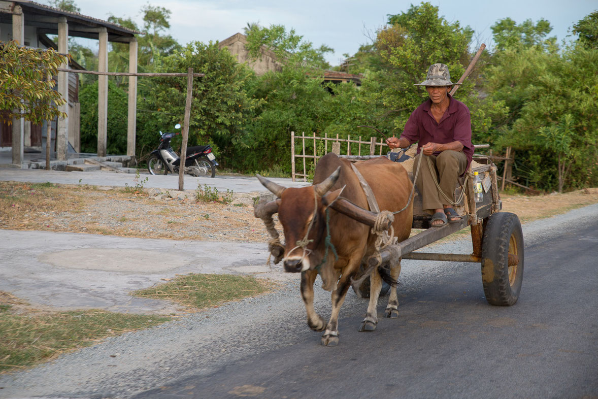
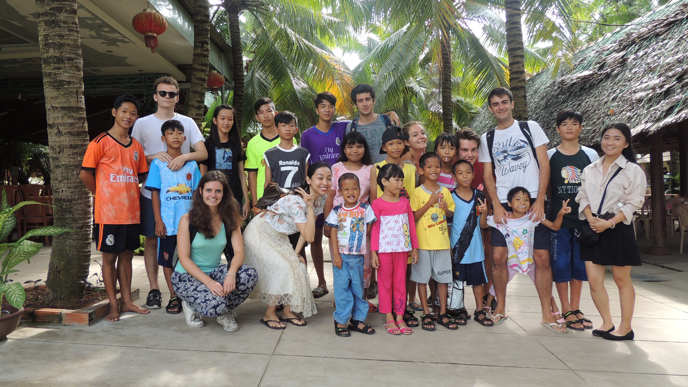

Fondée en 2001 par des étudiants de HEC Paris, Avenir Vietnam est une association de loi 1901 qui mène une action solidaire au Vietnam. Chaque été, des étudiants se rendent sur place et mettent leur énergie pour poursuivre la mission initiée il y a 20 ans. Si le cœur de l'activité de l'association reste le micro crédit, des actions éducatives sont aussi menées: Avenir Vietnam est donc à la fois le cadre d'un projet de développement économique, mais aussi d'un projet culturel et humain.
L'association est entièrement gérée par les étudiants d'HEC. Les responsabilités sont transmises d'une année sur l'autre à des étudiants de première année qui partent en mission l'été. Cette organisation nous permet d'être dynamiques et flexibles : elle nous permet d'avoir de nouveaux projets chaque année, qui peuvent être réalisés grâce à la structure de l'association. Cette volonté de rester indépendants nous permet de contrôler la mission sur place, et rend le projet particulièrement intéressant pour les étudiants qui partent puisque les responsabilités sont réelles.
La première mission d'Avenir Vietnam est de proposer des prêts à des habitants résidents dans les villes de Hué et My Tho au Vietnam. Ces prêts ont pour objectif d’apporter une aide à des entrepreneurs vietnamiens, généralement éloignés du système bancaire traditionnel, afin qu’ils puissent développer leurs projets dans différents domaines, tels que l’agriculture ou le commerce. Chaque été, l’équipe rend visite aux familles qui ont pu bénéficier d’un prêt afin de réaliser des études d’impact, et viennent également à la rencontre de nouveaux porteurs de projet. Les familles reçoivent aussi une formation et des notions élémentaires d’économie.
La deuxième mission de l’association est de réaliser des projets humanitaires. L’équipe travaille avec un orphelinat de la ville de Hué, pour lequel elle emmène des enfants chez le dentiste et le médecin. L’équipe collecte également des fonds pour distribuer du matériel scolaire et financer des bourses permettant aux enfants de poursuivre leur scolarisation dans de meilleures conditions. Le projet caritatif dans la ville de My Tho diffère. les étudiants participent à des travaux pour une bibliothèque scolaire et achètent des vélos pour les habitants. Les membres d'Avenir Vietnam dispensent également des cours de français aux personnes qu’ils rencontrent pendant leurs missions.
